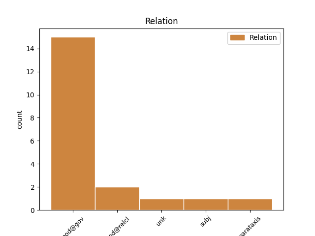
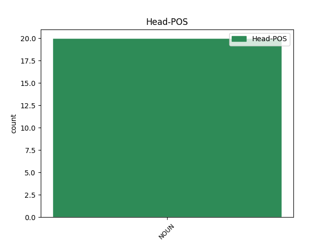
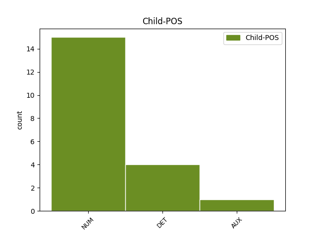

Distribution of features within this leaf



Agreement Rules sorted by frequency.
- When the dependent token is the modifer(mod@gov) of the head token, and the head token is NOUN and the dependent token is NUM.
1 Я _ _ _ _ 0 _ _ _
2 сначала _ _ _ _ 0 _ _ _
3 пригорюнилась _ _ _ _ 0 _ _ _
4 , _ _ _ _ 0 _ _ _
5 но _ _ _ _ 0 _ _ _
6 тут _ _ _ _ 0 _ _ _
7 позвонил _ _ _ _ 0 _ _ _
8 Сева _ _ _ _ 0 _ _ _
9 и _ _ _ _ 0 _ _ _
10 сказал _ _ _ _ 0 _ _ _
11 , _ _ _ _ 0 _ _ _
12 что _ _ _ _ 0 _ _ _
13 у _ _ _ _ 0 _ _ _
14 него _ _ _ _ 0 _ _ _
15 есть _ _ _ _ 0 _ _ _
16 два два NUM _ Case=Nom|Gender=Masc 17 mod@gov _ _
17 билета билет NOUN _ Animacy=Inan|Case=Gen|Gender=Masc|Number=Sing 0 _ _ _
18 , _ _ _ _ 0 _ _ _
19 абсолютно _ _ _ _ 0 _ _ _
20 безвозмездно _ _ _ _ 0 _ _ _
21 . _ _ _ _ 0 _ _ _
1 Увы _ _ _ _ 0 _ _ _
2 , _ _ _ _ 0 _ _ _
3 не _ _ _ _ 0 _ _ _
4 понимаю _ _ _ _ 0 _ _ _
5 ... _ _ _ _ 0 _ _ _
6 Где _ _ _ _ 0 _ _ _
7 эта _ _ _ _ 0 _ _ _
8 жизнь жизнь NOUN _ Animacy=Inan|Case=Nom|Gender=Fem|Number=Sing 0 _ _ _
9 , _ _ _ _ 0 _ _ _
10 которая _ _ _ _ 0 _ _ _
11 моя мой DET _ Case=Nom|Gender=Fem|Number=Sing 8 mod@relcl _ SpaceAfter=No
12 . _ _ _ _ 0 _ _ _
1 некую некий DET _ Case=Acc|Gender=Fem|Number=Sing 4 unk _ _
2 " _ _ _ _ 0 _ _ _
3 гражданскую _ _ _ _ 0 _ _ _
4 силу сила NOUN _ Animacy=Inan|Case=Acc|Gender=Fem|Number=Sing 0 _ _ _
5 " _ _ _ _ 0 _ _ _
6 раньше _ _ _ _ 0 _ _ _
7 на _ _ _ _ 0 _ _ _
8 всех _ _ _ _ 0 _ _ _
9 дебатах _ _ _ _ 0 _ _ _
10 представлял _ _ _ _ 0 _ _ _
11 хач _ _ _ _ 0 _ _ _
12 . _ _ _ _ 0 _ _ _
1 Опять _ _ _ _ 0 _ _ _
2 же _ _ _ _ 0 _ _ _
3 принцип принцип NOUN _ Animacy=Inan|Case=Nom|Gender=Masc|Number=Sing 0 _ _ _
4 социализма _ _ _ _ 0 _ _ _
5 : _ _ _ _ 0 _ _ _
6 каждому каждый DET _ Case=Dat|Gender=Masc|Number=Sing 3 parataxis _ _
7 по _ _ _ _ 0 _ _ _
8 труду _ _ _ _ 0 _ _ _
9 . _ _ _ _ 0 _ _ _
1 Сразу _ _ _ _ 0 _ _ _
2 обрезаем _ _ _ _ 0 _ _ _
3 сторону сторона NOUN _ Animacy=Inan|Case=Acc|Gender=Fem|Number=Sing 0 _ _ _
4 , _ _ _ _ 0 _ _ _
5 где _ _ _ _ 0 _ _ _
6 была быть AUX _ Aspect=Imp|Gender=Fem|Mood=Ind|Number=Sing|Tense=Past|VerbForm=Fin|Voice=Act 3 mod@relcl _ _
7 мякоть _ _ _ _ 0 _ _ _
8 . _ _ _ _ 0 _ _ _
1 Теперь _ _ _ _ 0 _ _ _
2 моё мой DET _ Case=Nom|Gender=Neut|Number=Sing 3 subj _ _
3 мнение мнение NOUN _ Animacy=Inan|Case=Nom|Gender=Neut|Number=Sing 0 _ _ _
4 о _ _ _ _ 0 _ _ _
5 Депутатах _ _ _ _ 0 _ _ _
6 . _ _ _ _ 0 _ _ _
Disagree Examples:
1 Тысячи тысяча NUM _ Animacy=Inan|Case=Nom|Gender=Fem|Number=Plur 2 mod@gov _ _
2 флагов флаг NOUN _ Animacy=Inan|Case=Gen|Gender=Masc|Number=Plur 0 _ _ _
3 Порошенко _ _ _ _ 0 _ _ _
4 и _ _ _ _ 0 _ _ _
5 юмор _ _ _ _ 0 _ _ _
6 о _ _ _ _ 0 _ _ _
7 Жириновском _ _ _ _ 0 _ _ _
8 ( _ _ _ _ 0 _ _ _
9 Видео _ _ _ _ 0 _ _ _
10 ) _ _ _ _ 0 _ _ _
1 ДВЕ два NUM NUM Case=Nom|Gender=Fem 2 mod@gov _ _
2 ПТИЧКИ птичка NOUN NOUN Animacy=Inan|Case=Gen|Gender=Masc|Number=Sing 0 _ _ _
3 , _ _ _ _ 0 _ _ _
4 ГОРЕ _ _ _ _ 0 _ _ _
5 , _ _ _ _ 0 _ _ _
6 ЛЕВ _ _ _ _ 0 _ _ _
7 И _ _ _ _ 0 _ _ _
8 НОЧЬ _ _ _ _ 0 _ _ _